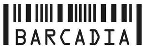

Trade Mark Journal No.2025/018 2 May 2025
UK00004190087 16 April 2025 (9,28,35,41,43)

- Class 9
- Software for arcade video game machines; Monitors for arcade video game machines; Programs for arcade video game machines; Game programs for arcade video game machines; Games software for use with video game consoles; Joysticks for use with computers, other than for video games; Computer hardware for games and gaming; Video game cartridges; Downloadable interactive entertainment software for playing video games; Computer game cartridges; Downloadable interactive entertainment software for playing computer games; Computer game software for use with on-line interactive games; Interactive entertainment computer software for video games; Video game cassettes; Computer game cassettes; Memory cards for video game machines; Video game discs; Video game software; Computer application software featuring games and gaming; Video games cartridges; Downloadable video game software; Interactive game software; Downloadable computer games; Downloadable game software; Games cartridges for use with electronic games apparatus; Game software; Computer games entertainment software; Computer game discs; Interactive casino games provided through a computer or mobile platform; Computer video game software; Downloadable computer game software; Computer game software, downloadable.
- Class 28
- Arcade games; Arcade game machines; Coin-operated arcade video game machines; Arcade video game machines; Video game apparatus, arcade games, and amusement machines ; Arcade video game machines with multi-terminals; Arcade basketball shooting games; Coin-operated pinball game machines; Pinball games; Hand-held pinball games; Arcade games (electronic -) [coin or counter operated apparatus]; Amusement apparatus for use in arcades; Coin-operated games; Pinball games machines [toys]; Joysticks for video game machines; Coin-operated amusement gaming machines; Amusement game machines; Japanese vertical pinball machine (pachinko machines); Pinball machines; Video game joysticks; Gamepads for video game machines; Pinball games machines [coin or counter operated]; Game consoles; Handheld game consoles; Hand-held game consoles; Joysticks being parts of video game consoles; Computer game joysticks ; Video game consoles; Joysticks for video games; Video game machines; Coin-operated gaming equipment; Computer game consoles; Japanese horizontal pinball machines [smartball machines]; Home video game machines; Controllers for video game machines; Controllers for game consoles; Automatic coin-operated games; LCD game machines; Hand-held consoles for playing video games; Coin-operated amusement machines; Parlor games; Video game machines for use with televisions; Interactive gaming chairs for video games; Games consoles; Coin-operated billiard tables; Billiard tables (Coin-operated -); Pinball machines [coin or non-coin operated]; Horizontal pinball machine (korinto-game machines); Coin-fed amusement gaming machines; Bingo game playing equipment; Tabletop basketball games; Coin-operated video amusement apparatus; Electronic dart games; Dart games; Table-top games; Stand-alone video game machines; Gaming machines; Claw crane game machines; Token-operated video game machines; Fishing rod shaped game controllers for fishing games; Amusement machines, automatic and coin-operated; Racing car games; Handheld electronic games; Video output game machines for use with televisions; Building games; Hand-held electronic video games; Hand-held computer games.
- Class 35
- Rental of coin-operated vending machines.
- Class 41
- Club [discotheque] services; Dance club services; Night clubs; Night club services [entertainment]; Entertainment club services; Club entertainment services; Club services [entertainment]; Karaoke lounge services; Provision of club entertainment services; Nightclub services; Nightclub services [entertainment]; Arcade game services; Rental of arcade video game machines; Video game arcade services; Amusement arcade services; Amusement arcades; Video arcade services; Amusement arcade gaming machine rental services; Amusement arcade machine rental services; Amusement arcade services (Providing -); Providing amusement arcade services; Virtual reality arcade services; Providing video arcade services; Rental of video game consoles; Computer and video game amusement services; Escape game [entertainment]; Rental of casino games; Leasing of casino games; Leasing of game machines; Video game entertainment services.
- Class 43
- Bar and restaurant services; Restaurant and bar services; Beer bar services; Bar services; Wine bar services; Coffee bar services; Snack bar services; Juice bar services; Wine bars; Bars; Club services for the provision of food and drink; Cocktail lounge buffets; Cocktail lounge services; Lounge services (Cocktail -); Night club services [provision of food]; Cocktail lounges; Bar information services; Serving food and drink in restaurants and bars; Juice bars; Food and drink catering for cocktail parties; Providing food and drink in restaurants and bars.
Epic Bars and Clubs Ltd